Звичайний метод найменших квадратів
Для кращого розуміння регресійного аналізу повернемося до діаграми розсіювання даних відносно комп'ютерних дисків (Рис. 2).
Нам необхідно знайти пряму лінію, яка проходить через середину діаграми розсіювання і найкращим способом враховує вихідні дані.
Лінія регресії повинна відображати залежність між залежною і незалежною змінними з точністю та чіткістю, а також має підходити діиііім спостереженням (точкам) краще, ніж будь-яка інша лінія, яку можна зобразитити.
Отже, ми шукаємо лінію, яка найкраще описує статистичні дані
(Див. Рис. 3).
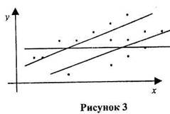
Це можна зобразити використавши звичайний метод найменших квадратів (МНК). З метою ілюстрації МНК використаємо діаграму розсіювання для комп'ютерних дисків, відтворену повторно на Рис. 4.
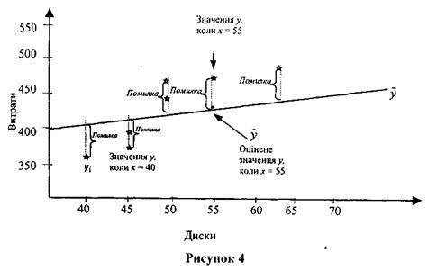
Цей метод носить назву МНК, тому що він мінімізує суму квадратів вертикальних відстаней від точок-спостережень. до відповідних точок регресійної прямої. Для більшого розуміння МНК необхідно пам'ятати, що, як проілюстровано на Рисунку 4, 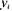 - це реальні спостереження змінної - це скориговані значення, що визначаються регресійним рівнянням. Визначимо величину вертикальних відстаней як різницю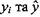, тобто знайдемо величину 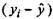. Ця різниця підноситься до квадрату. Це необхідно зробити для усіх п'яти точок нашого прикладу, після чого результат додається і ми маємо
- це скориговані значення, що визначаються регресійним рівнянням. Визначимо величину вертикальних відстаней як різницю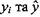, тобто знайдемо величину 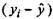. Ця різниця підноситься до квадрату. Це необхідно зробити для усіх п'яти точок нашого прикладу, після чого результат додається і ми маємо
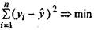(5)
або
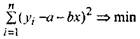 (6)
Це приводить до системи двох рівнянь з двома невідомими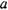та 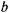 або до системи нормальних рівнянь Гауса, а саме:
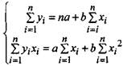
Зауважимо, що 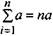, що і використано у системі (7).
Система лінійних рівнянь розв'язується будь-яким відомим методом. Пряма лінія 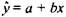 називається лінією лінійної регресії для 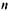 точок.
Невідомі коефіцієнти системи лінійних рівнянь (7) або регресійні коефіцієнти можна знаходити як
(8) 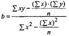
(9) 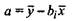
Приклад 1. Дано 7 значень відповідно для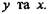
а) Побудувати регресійну модель;
б) Як зміниться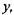 якщо  збільшити на 1?
збільшити на 1?
в) Чому буде рівне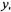 якщо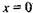?
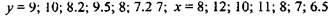
Розв'язання. Побудуємо розрахункову таблицю 2.
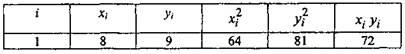
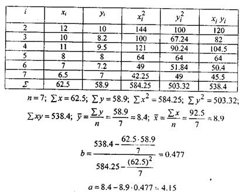
Відповідь: а)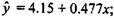
б)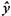 збільшиться на 0.477 одиниць;
в) 4.15.
У багатьох випадках для оцінки щільності статистичного зв'язку між змінними величинами 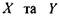необхідно обчислити коефіцієнт
лінійної кореляції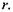
Його можна обчислити за формулою
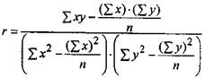 (10)
або 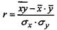 (11)
де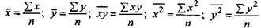
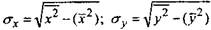 (12)
Значення коефіцієнта лінійної кореляції  належить інтервалу 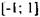 . Абсолютна величина коефіцієнта лінійної кореляції вказує міру
належить інтервалу 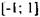 . Абсолютна величина коефіцієнта лінійної кореляції вказує міру
щільності лінійного зв'язку, тоді як знак (додатній або від'ємний)
акцентує увагу на формі взаємозалежності величини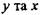(пряма або
обернена).
Приклад 2. Для вибіркових даних прикладу 1 обчислити коефіцієнт лінійної кореляції.
Розв'язання. Маємо
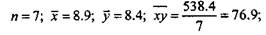
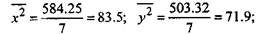
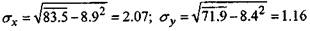